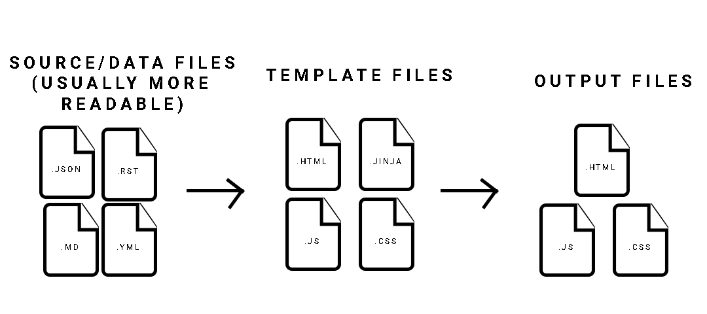
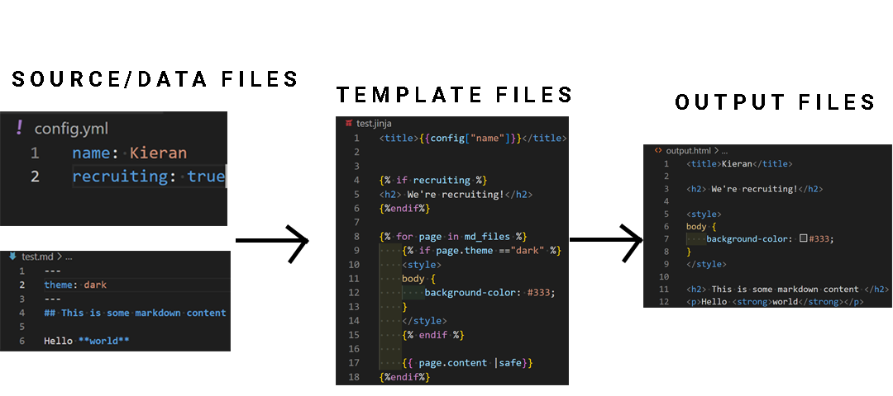
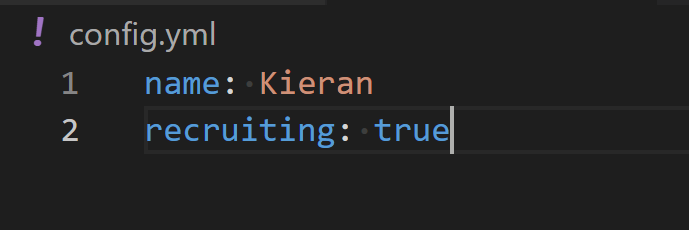
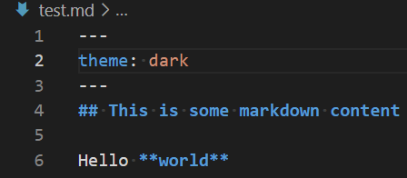
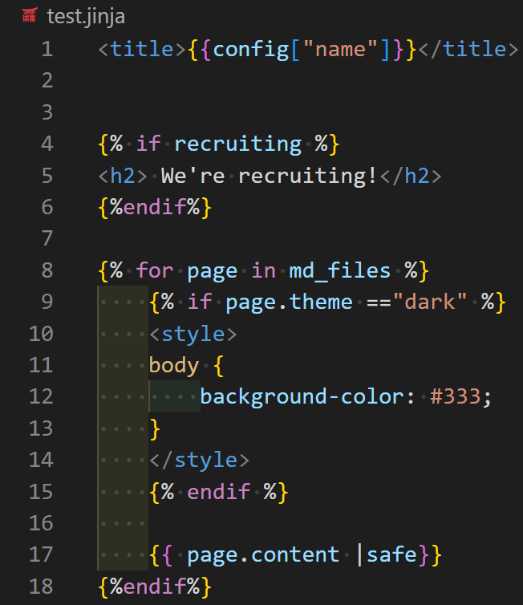
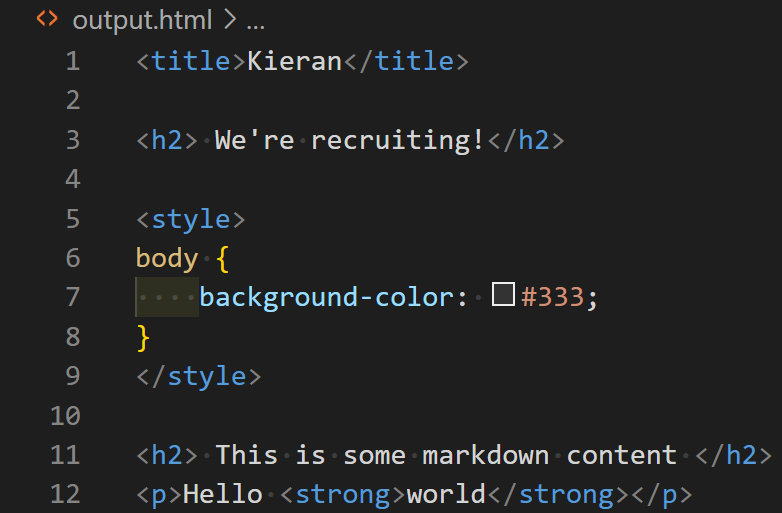
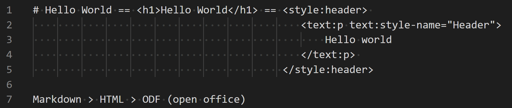
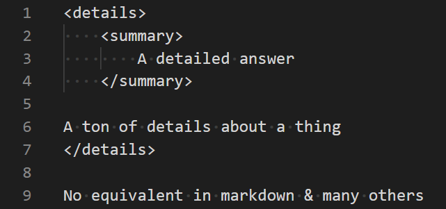
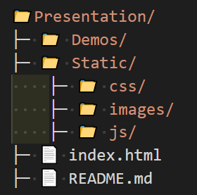

Static site generators
An overview of markup transformation & Static Site Generator (SSG) demo
What is a static site generator?
A static site generator is a system that allows you to create a website using a template and a set of data. You can think about this as translating/transpiling data from a language or languages to a website. Universally SSG's have 3 parts:
- The source/state/content files (or sometimes a single file)
- The template file(s)
- The output file(s)
Why use a SSG?
- Easier to maintain than a static site
- More configurable than a static site
- cheaper and less complex than a dynamic site (i.e. wordpress)
Principles of an SSG
There are some common principles that static site generators use that are important to be aware of
State driven templating
This is the concept that unlike a typical 'static' site there is some sort of state used in conjunction with predefined templates to drive generating the output files
State driven templating
Example (Ezcv)
Source files
Source files are typically human-readable files (though don't have to be) and are used to drive the state of the template files. They are often Markdown or rich source text files, along with some sort of configuration file in JSON, YAML or TOML
Template files
These files are typically HTML-like files that use templating languages to pull data from the source files and generate output files
Output files
These files are the result at the end that can be hosted somewhere. These will typically be HTML/CSS/JS files along with any additional static files like images.
Markup transformation
Lost of SSG's are built on the principle that markup systems (like HTML) are used to express common structures and content. With this the specifics of one system are often analogous to another which means you can convert them 1 to 1 from one form to another (i.e. markdown to HTML)
Markup transformation
This does not work in all cases
Another example of a SSG would be this presentation
This presentation is built using the ezprez framework. It is a static site generator that uses python to generate HTML files
Ezprez Source Ezprez Docs Presentation SourceSource files
The source file(s) are written in python using .py files
Example source for the last slide
from ezprez.core import Slide, Presentation
from ezprez.components import *
# Creating a slide
Slide('Source Files', 'The source file(s) are written in python using .py files', background='black')
# Presentation settings
title = 'Static site generators'
description = 'An overview of markup transformation & Static Site Generator (SSG) demo'
url = 'https://kieranwood.ca/static-site-generators'
prez = Presentation(title, description, url)
prez.export('.', force=True, folder_name='Presentation') # Export to ./Presentation
Template files
In Ezprez the template files are obfuscated from you and are part of the library itself. They still exist, you just can't interact with them.
Output files
In this case Ezprez will export out an index.html file which is the presentation and several folders
Hugo overview
Hugo uses markdown files for content and TOML files for configuration
Source files
Hugo uses markdown files for content and TOML files for configuration
Example source files
Template files
Hugo does not have a seperate file type for template or output files, both are .html files
Example Template files
Output files
Hugo will output HTML/CSS/jS files